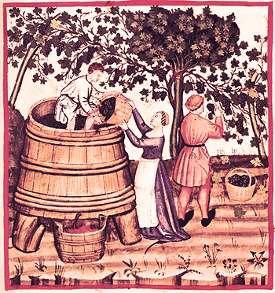

Though the wine making process is different for red, rosé or white wines, the main steps are common to all of them. Here are a list of them.
As you can probably imagine you can not make wine out of bananas, what you need are grapes.
Also, your grapes need to be properly ripe. In fact, choosing when to start harvesting can sometimes be very close to a poker bet: waiting for the perfect ripeness may carry the risk of a storm or bad weather conditions that have the potential of turning your best vintage into the worst one.
After this important choice is made, grapes are harvested either by hand or by machine. Many wineries opt for hand harvesting as it is more delicate with the fruits.

For thousands of years grapes were foot stomped by dancing on the grapes into huge wooden barrels.
Nowadays, technology and health regulations take care of that: grapes are mechanically pressed until the last drop of sweet juice is taken out of them.
After pressing, the harvest is put into the fermentation vats, which can be very small or very big, where yeasts can have they banquet.
What yeast love is sugar, they eat the sugar inside the juice and convert it into alcohol and co2. Some precious white wines are fermented into small oak barrels. Few winemakers prefer using native yeasts present in all grapes instead of adding them.
After the fermentation is done and the wine is racked off, it is sometimes put into oak barrels where it will continue its development until bottling.
More and more producers are using new oak for barrel ageing, while others are kept in large stainless steel tanks. And wait...
You are almost done. This is the last stage before the slow and relatively lengthy ageing process.
Put your wine in bottles, seal them with caps or cork and guess what? Wait, again. Wine is a living thing, it will change, tune up and get ready for your best occasion.